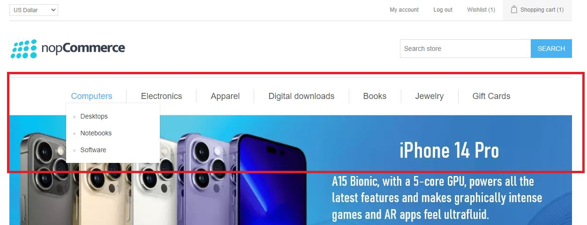
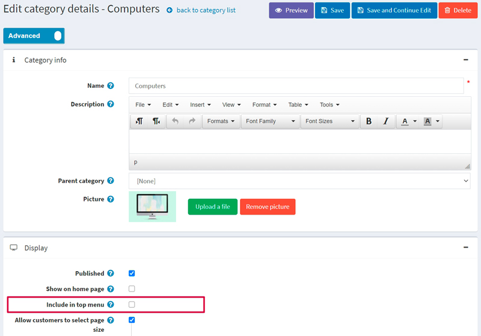
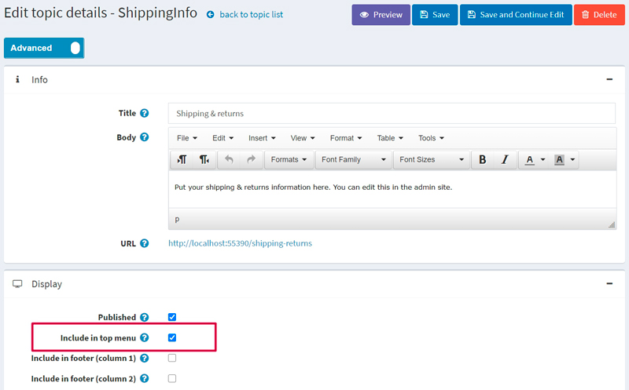
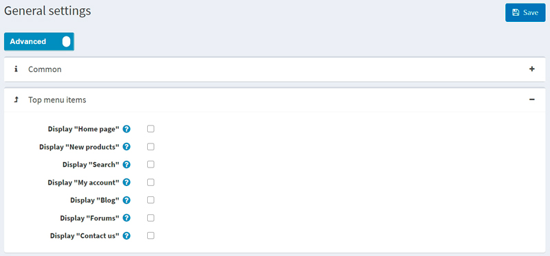
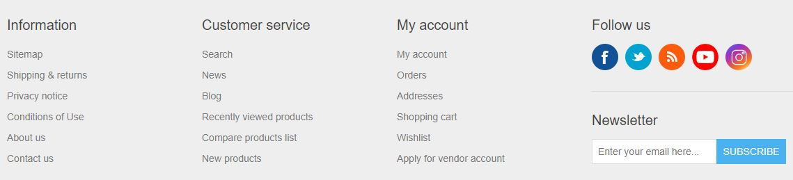
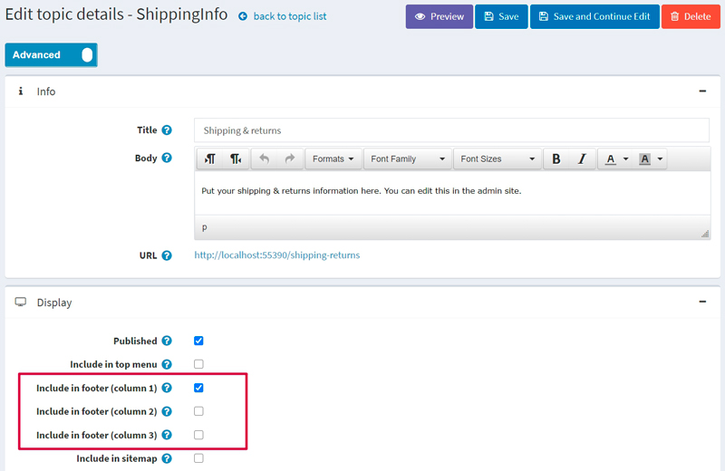
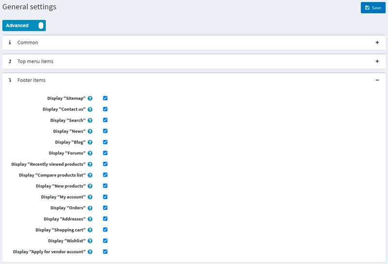
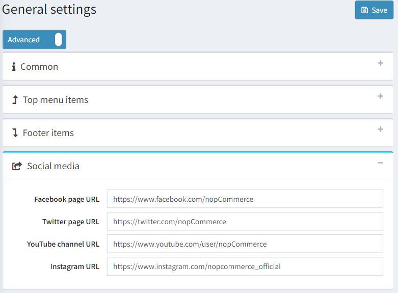
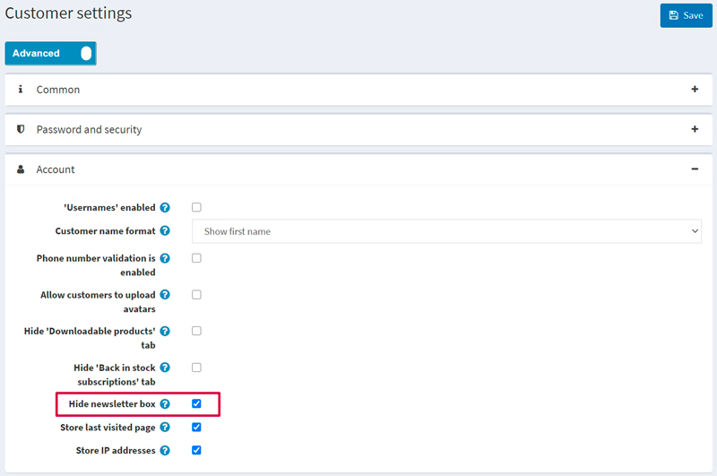

Top menu & footer
In nopCommerce, you can choose how the top menu and footer will be displayed. You can include the most important and interesting links in the top menu to attract more customers and add service links to the footer to provide the current store information to your clients.
Top menu
In the Default Clean theme, the top menu looks as follows: 
As you can see, it displays the store categories. Please note, if you want a category to be displayed in the top menu you should select the Include in top menu checkbox on the category edit page. For more details, read below.
You can include the following items in the top menu:
- Categories
- Custom topics (pages)
- Links to the site's sections
See below how to add each of these items.
Categories
To include a category in the top menu, go to the category edit page in the admin area: choose Catalog → Categories. Then click the Edit button beside the category. The Edit category details window will be displayed:

Select the Include in top menu checkbox and click Save.
Note
If this category is a subcategory, then ensure that its parent category has this property enabled as well.
Custom topics (pages)
To include a topic in the top menu, go to the topic edit page in the admin area: choose Content management → Topics (pages). Then click the Edit button beside the topic. The Edit topic details window will be displayed:

Select the Include in top menu checkbox and click Save.
Links to the site's sections
To include some of the site's sections in the top menu, go to Configuration → Settings → General settings. Proceed to the Top menu items panel:

Choose the items you want to be displayed in the top menu from the following list:
- Display "Home page"
- Display "New products"
- Display "Search"
- Display "My account"
- Display "Blog"
- Display "Forums"
- Display "Contact us"
Then click Save.
Note
The "New products" menu item will only be displayed when the "New products" page is enabled on the Configuration → Settings → Catalog settings page (Additional sections panel).
Footer
In the Default Clean theme, the footer looks as follows: 
By default, it displays site section links grouped by three types: Information, Customer service, My account. You can remove any of the displayed links or add new ones.
You can include the following items in the footer:
- Custom topics (pages)
- Links to the site's sections
See below how to add each of these items.
Custom topics
To include a topic in the footer, go to the topic edit page in the admin area: choose Content management → Topics (pages). Then click the Edit button beside the topic. The Edit topic details window will be displayed:

Choose where you want the topic link to be displayed. You can select one or more checkboxes:
- Include in footer (column 1)
- Include in footer (column 2)
- Include in footer (column 3)
For example, if you choose Include in footer (column 1), then the link will be displayed in the Information column.
Click Save to save the changes.
Link to the site's sections
To include some of the site's sections in the footer, go to Configuration → Settings → General settings. Proceed to the Footer items panel:

Choose the items you want to be displayed in the footer from the following list:
- Display "Sitemap"
Note
The "Sitemap" menu item will only be displayed when the Sitemap enabled checkbox is selected on the Configuration → Settings → General settings page (Sitemap panel).
- Display "Contact us"
- Display "Search"
- Display "News"
- Display "Blog"
- Display "Forums"
- Display "Recently viewed products"
Note
The "Recently viewed products" menu item will only be displayed when the "Recently viewed products" page is enabled on the Configuration → Settings → Catalog settings page (Additional sections panel).
- Display "Compare products list"
Note
The "Compare products list" menu item will only be displayed when the "Compare products" functionality is enabled on the Configuration → Settings → Catalog settings page (Compare products panel).
- Display "New products"
Note
The "New products" menu item will only be displayed when the "New products" page is enabled on the Configuration → Settings → Catalog settings page (Additional sections panel).
- Display "My account"
- Display "Orders"
- Display "Addresses"
- Display "Shopping cart"
Note
The "Shopping cart" menu item will only be displayed to a certain customer when the "Public store. Enable shopping cart" permission is enabled for the customer's role. To manage permissions, go to the Configuration → Access control list page. Or read more about permissions in the Access control list section.
- Display "Wishlist"
Note
The "Wishlist" menu item will only be displayed to a certain customer when the "Public store. Enable wishlist" permission is enabled for the customer's role. To manage permissions, go to the Configuration → Access control list page. Or read more about permissions in the Access control list section.
- Display "Apply for vendor account"
Note
The "Apply for vendor account" menu item will only be displayed when the Allow customers to apply for vendor account checkbox is selected on the Configuration → Settings → Vendor settings page (Common panel).
Click Save to save the changes.
Follow us
To customize the Follow us block of the footer, go to Configuration → Settings → General settings. Proceed to the Social media panel as follows:

Enter your social media links:
- Facebook page URL
- Twitter page URL
- YouTube channel URL
- Instagram page URL
If you want to enable/disable the RSS link in the footer, you need to enable/disable news accordingly on the Configuration → Settings → News settings page (Common panel).
Newsletter
The newsletter block is displayed in the footer by default. To hide this block go to Configuration → Settings → Customer settings. Proceed to the Account panel and select the Hide newsletter box checkbox as follows:

Click Save to save the changes. The footer will be updated accordingly.
Powered by nopCommerce
According to the terms of the nopCommerce license, without purchasing the Copyright removal key:
- You may NOT remove or hide the "Powered by nopCommerce" statement that appears at the bottom of each page within a nopCommerce-powered website
- When users click on the "powered by nopCommerce" text it must direct them to https://www.nopcommerce.com. The "Powered by nopCommerce" link must be in the same format, unedited, as delivered in the program source code. This obligation shall also apply to any copies or derivative works!
- The copyright notice at the footer of your store (website) must remain intact, unedited and clearly visible. Please do NOT attempt to edit, remove or hide the copyright notice in any way.
Upon purchase of a "copyright removal key," you are permitted to remove the "Powered by nopCommerce" statement. Copyright infringement is illegal — please be advised.
For more information please visit the nopCommerce copyright removal key page.